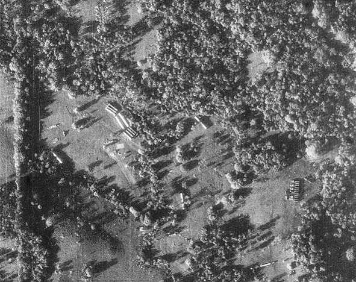

Directions: Study the photograph and the background, then answer the questions.

Background. On October 14, 1962, an American U-2 reconnaissance aircraft photographed Soviet medium range missile sites under construction in Cuba, ninety miles from Florida. President Kennedy deliberated in secret for six days, then announced the discovery on October 22 and imposed a naval quarantine. It took effect on October 24, and some Soviet ships turned back at the line. On October 27 a Soviet missile shot down an American U-2 over Cuba.
1. What has the U-2 photographed in the image above, and what did analysts have to add to the photograph before a president could act on it?
2. Three years before this photograph, Cuba changed governments. Name the revolution's leader, the government he overthrew, and the April 1961 event that taught him to seek a Soviet guarantee.
3. Kennedy chose pressure at sea over the two harder options the Executive Committee weighed. Name those two options, and explain why the word quarantine served his purpose better than the word blockade.
4. The settlement announced on October 28 was only part of the bargain. State the public part, then state the secret part and the evidence that later established it.
1. What has the U-2 photographed, and what did analysts add? Soviet missile equipment in Cuba, in this frame missile transporters and missile-ready tents where fueling and maintenance took place. Analysts had to identify the shapes, mark the installations, and judge what kind of missiles the sites were being built for. The photograph alone was shapes on cleared ground. Credit requires both the identification and the analysts' interpretive work. (Blueprint 10)
2. Leader, government overthrown, and the April 1961 event. Fidel Castro led the Cuban Revolution, which overthrew the government of Fulgencio Batista in 1959 and turned toward alliance with the Soviet Union. The April 1961 event was the Bay of Pigs invasion, the failed invasion of Cuba by Cuban exiles trained and supplied by the United States, defeated on the beach within three days. Its failure taught Castro to expect a larger attempt and to seek a stronger Soviet guarantee. (Blueprint 9)
3. The two harder options, and why quarantine. An air strike on the missile sites and an invasion of Cuba. Kennedy called the blockade a naval quarantine, President Kennedy's name for the naval blockade of Cuba in 1962, chosen because a blockade is legally an act of war and quarantine was not. The word let the United States stop offensive weapons at sea while holding a step in reserve short of war and leaving Khrushchev room to retreat. (Blueprint 10)
4. The public part and the secret part. Publicly, the Soviet Union withdrew its missiles from Cuba under international observation, the quarantine was lifted, and the United States pledged not to invade Cuba. Secretly, the American Jupiter missiles were quietly removed from Turkey months later. The evidence includes the Dobrynin cable of October 27, 1962, released from Russian Foreign Ministry archives, in which the Soviet ambassador reported Robert Kennedy's confidential assurance on Turkey, four to five months and nothing public, alongside Khrushchev's public letter of October 27 demanding the trade. (Blueprint 10)
Teacher note. This check is formative. Question 1 is the evidence diagnostic. Students who write only "missiles" without the analysts' role have missed how this crisis's central fact was produced, and should be sent back to Station 1 of the activity. Question 4 predicts success on the writing task, because it requires the two part settlement stated from evidence rather than from the public story alone.